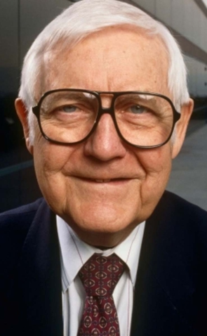
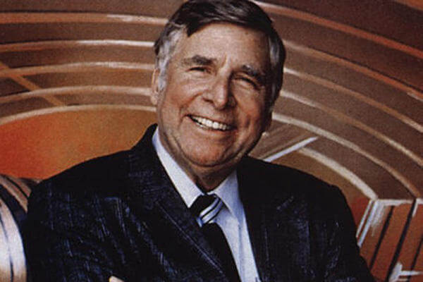
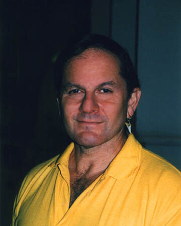
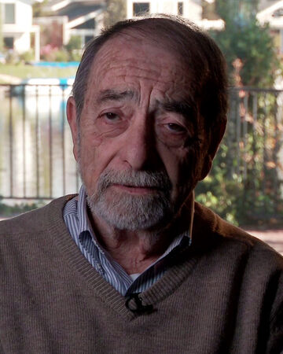
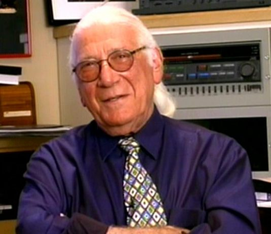
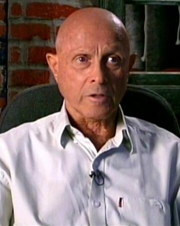

Equipo tecnico
Index
Introduccion
Reparto
Equipo
Acerca de
Componentes
Dirección: Robert Wise

Producción: Gene Roddenberry

Guion: Alan Dean Foster

Guion: Harold Livingston

Música: Jerry Goldsmith

Fotografía: Richard Kline
